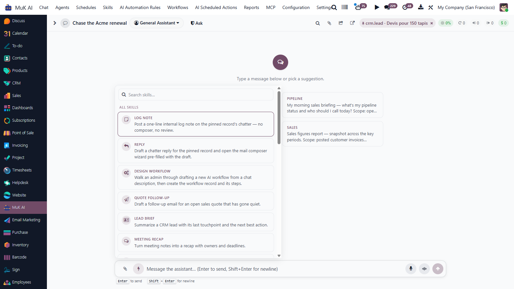
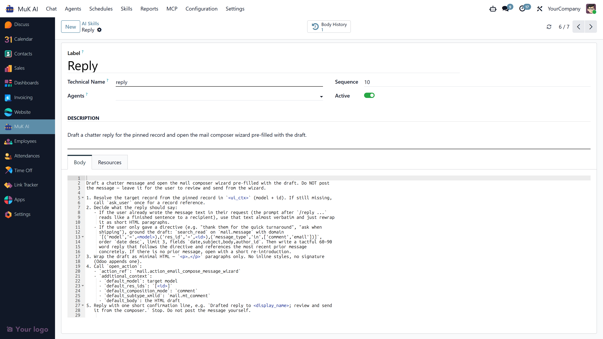
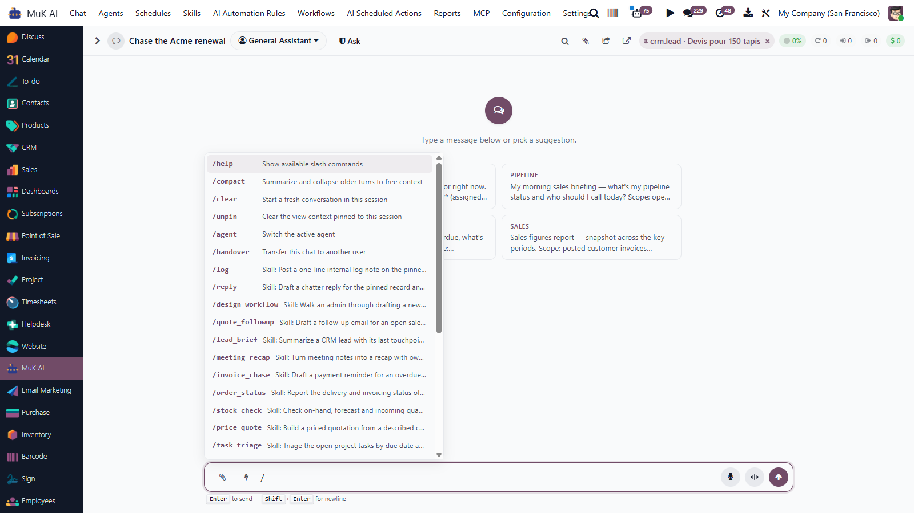

MuK AI Skills
Pre-built Agent Skills, One Click Away
MuK IT GmbH - www.mukit.at
Community
Enterprise


MuK AI Skills adds DB-backed
skill records that bundle a name, a one-line
description for LLM discovery, a markdown body of
instructions, and optional file attachments. Visible
skills show up in a system-prompt addendum so the
agent can pick one autonomously, and users can fire
them from the skills panel in the composer or with
/<name> in chat. Plugs into
muk_ai via _inherit only
— no fork.
Each skill carries a technical name, label, icon,
description, markdown body and an attachment list.
Visibility is a single three-way choice — only
me, selected users, everyone. Body edits are versioned
via the reusable muk_ai.revision.mixin
from muk_ai; the History stat button
rolls back to any prior revision.

The bolt next to the paperclip opens every skill the session can reach, as cards with icon, label and description. Its own search field filters them, the ones you ran last sit on top under Recently used, and arrow keys plus Enter run one without touching the mouse. Nothing is auto-focused on a touch device, so the on-screen keyboard never covers the list.
Type / in the composer to merge built-in
commands with the skills visible to this session.
/quote_followup records a synthetic
tool_call+tool_result pair
so the LLM picks up on the next turn as if it had
called the skill itself — one path, both
audiences (LLM and user).

Attached files come back as a manifest with
odoo://attachment/<id> URIs. The
agent fetches what it needs via
muk_mcp's generic
read_resource — large playbooks,
PDFs, CSVs ride along without bloating the body or
every conversation.
Are you having troubles with your Odoo integration? Or do you feel
your system lacks of essential features?
If your answer is YES
to one of the above questions, feel free to contact us at anytime
with your inquiry.